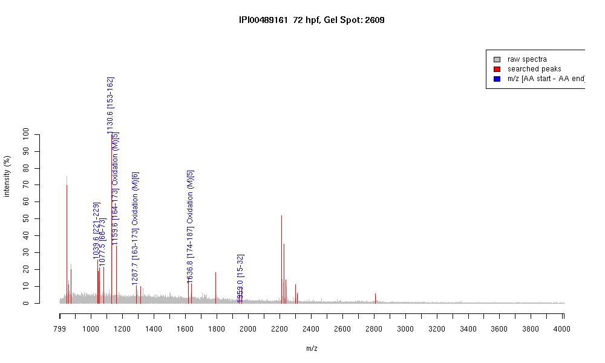

| Name | "PREDICTED: similar to Tubulin, beta, 2" |
|---|---|
| MW | 39709.1 |
| PI | 4.84 |
| Mascot Protein Score | 74 |
| Masses (matched / unmatched) | 7 / 23 |

| Peptide | MZ (calc) | MZ (observed) | Error (DA) | Error (PPM) | Start | Stop | Modifications |
|---|---|---|---|---|---|---|---|
| YLTVAAVFR | 1039.5935 | 1039.5914 | -0.0021 | -2 | 221 | 229 | |
| IREEYPDR | 1077.5323 | 1077.5266 | -0.0057 | -5 | 66 | 73 | |
| FPGQLNADLR | 1130.5953 | 1130.5874 | -0.0079 | -7 | 153 | 162 | |
| LAVNMVPFPR | 1159.6292 | 1159.6144 | -0.0148 | -13 | 164 | 173 | Oxidation (M)[5] |
| KLAVNMVPFPR | 1287.7241 | 1287.7144 | -0.0097 | -8 | 163 | 173 | Oxidation (M)[6] |
| LHFFMPGFAPLTSR | 1636.8304 | 1636.8031 | -0.0273 | -17 | 174 | 187 | Oxidation (M)[5] |
| GHYTEGAELVDSVLDVVR | 1958.9817 | 1958.9852 | 0.0035 | 2 | 15 | 32 |